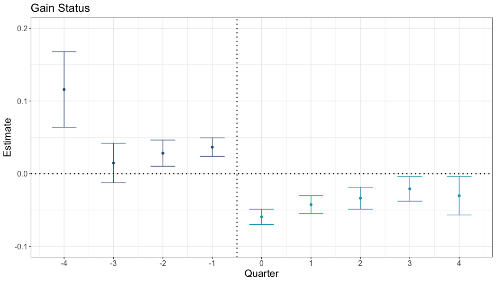
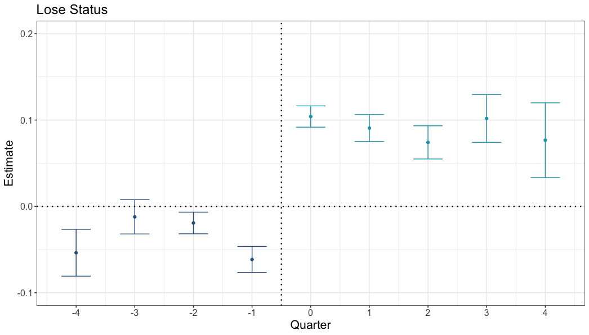
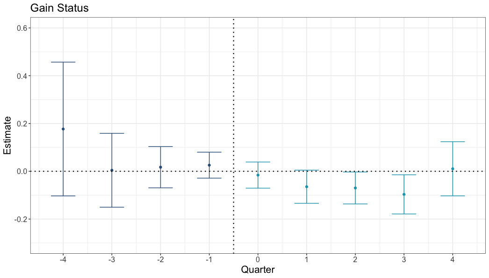
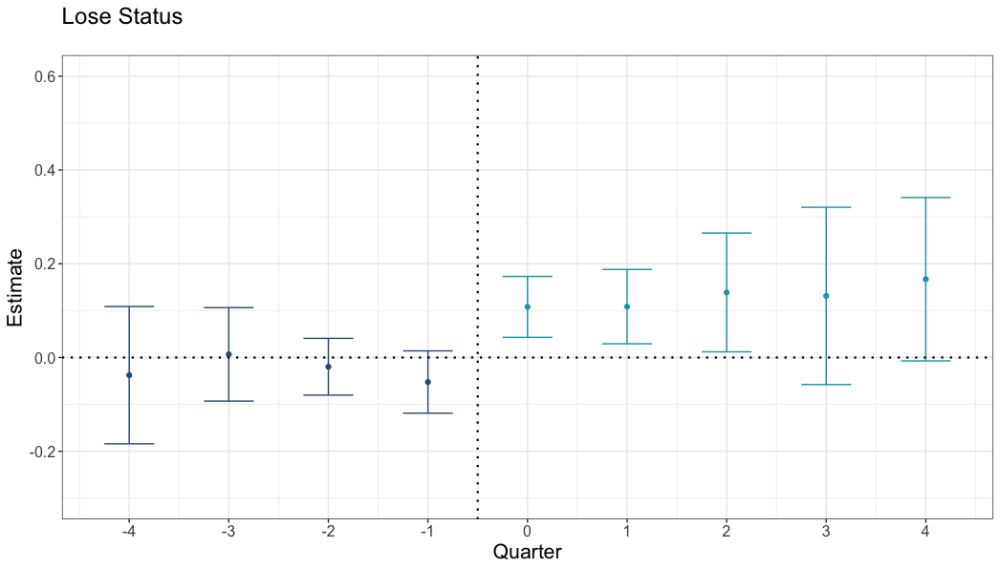
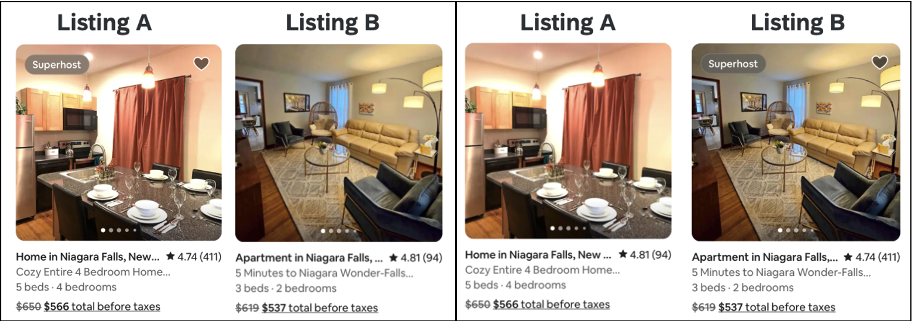

Star ratings are a bad way to compare products (1)
We don’t know enough about what goes into other people’s ratings
This is the first in a series about star ratings/online reviews. I plan to mainly talk about my own research. But who knows. Maybe we’ll get weird.
Disclaimer: This post is in no way a paid advertisement for Rick Steves.
The promise
We make decisions by making comparisons.1 Sometimes, we compare the cost of doing something to the benefit of doing that thing—“Will I enjoy a vacation to Toledo enough to offset its cost?”—deciding whether to do/buy something. Other times, we compare options directly—“Where should I stay overnight on my vacation in Toledo?”—deciding what to do/buy. I am going to focus on the second type of comparison in this post. This is not because deciding whether to do something is any less important or complex, but because I think that we under-appreciate how misinformed we are in these decisions.
Making these comparisons is often difficult. If I have never been to Toledo, nor the area around it, how am I supposed to decide which of Toledo’s hotels, Airbnbs, and Vrbos I will be happiest staying at? I almost certainly cannot do this alone. I simply do not have the information.
So, how do we compare alternatives? We collect more information. Two decades ago, I would have gone to Chapters,2 bought a copy of Rick Steves’ guidebook to Toledo and Madrid, and followed Mr. Steves. If he preferred the Hotel Carlos V over the Hotel Pintor El Greco, then Carlos V it would be for me. Because how else could I compare Toledo’s lodging?
The internet changed all of that. The internet democratized opinions, as it democratized everything.3 With Tripadvisor, Yelp, and Google, we are no longer forced to seek out experts, a well-traveled friend, or simply guess. Instead, we can find a ton of information at miniscule effort and cost.
In theory, this is wonderful. The internet exposes us to opinions from people who are like us. Rick Steves is a professional traveler from Barstow, California (which might be more arid and empty than the moon). How could he possibly know what it is like to travel for me, a recreational traveler from El Cerrito, California? Certainly, the masses at Tripadvisor will know better for me. The internet also shows these opinions in clearly comparable formats—star ratings.
Therefore, if the Hotel Carlos V has an average star rating of 4.3, and the Hotel Pintor El Greco a 4.6, it must be true that the Pintor is the way to go! If it wasn’t better, why would it have a higher rating?
The problem
Unfortunately, we don’t create ratings in the same way that we use them. Specifically, we don’t create a rating for a hotel by comparing our experience at that hotel to our experience at a different hotel—we can’t do this, because we only stay at one hotel at a time. And even if we do stay at multiple hotels over some period of time, we certainly do not stay at them all, or even a substantial fraction.
The result is that no two ratings mean the same thing; Even though they are on the same scale visually (1-5 stars), there is nothing to enforce ratings to be on the same scale mentally. In fact, they can be quite different, and misleading as a result. For example, we often evaluate things in comparison to our prior expectations for that thing. The higher our expectations, the more likely we are to be disappointed in a given experience,4 which leads to lower ratings. This can become a big problem when two conditions are met:
Expectations differ systematically between alternatives
Future consumers—using ratings to make comparisons—under-appreciate the influence of expectations
For an example of both conditions and their impact, I am going to discuss a recent paper Nick Reinholtz and I published in 2025 at Journal of Consumer Research (link).5
Airbnb Superhost status
Airbnb has to provide information to help their customers feel comfortable enough to make a purchase (like any platform, only more so). Airbnb collects guests’ ratings, but also presents Superhost status—their own, Airbnb-specific certification to distinguish “top-performing” listings. Lots of platforms who collect ratings also present certifications; eBay has “Top-Rated Sellers”, Apple’s App Store has Awards and “Apps We Love”, Indigo Bookstores has “Heather’s Picks”, and anywhere else you shop probably has something similar.6
The idea behind these certifications is obvious—make customers expect that an awarded option will be good, leading them to buy. Unfortunately, expectations are not forgotten immediately after we decide to make a purchase. Instead, when we are asked to evaluate that purchase down the road, we compare our experiences to those same expectations.
In the case of Airbnb, this means that gaining Superhost status has a negative effect on ratings, and that losing Superhost status has a positive effect on ratings. Nick and I demonstrate this in three ways in the paper, two of which I mention here.
First, we compare ratings across different Airbnb listings over time. Specifically, we look at how ratings change over time for listings that change status, and compare that to how ratings change over the same period for listings that do not change status.
Because there are obvious differences between Superhost and non-Superhost listings other than their status, we cannot simply compare the average ratings between these groups. Superhosts are probably objectively better, so they will unsurprisingly have higher ratings. However, we can use this fact to our advantage by comparing the difference in ratings before one group changes status to the difference in ratings after.
The key assumption we make here is that nothing that influences ratings changes between listings in these groups alongside Superhost status. For example, we have to assume that listings do not also add or drop amenities substantially when they change Superhost status. This assumption should feel like a stretch, which necessitates the second analysis.
The figure below shows the average effect of gaining Superhost status on Airbnb ratings. Before quarter zero (when status is gained), this should be zero—after all, how can Superhost status have an effect before it is gained? If these estimates (the dark dots) are not zero, we have a problem with the assumption above. Clearly, we have a problem with this specification, as these estimates suggest listings that gain status have higher ratings before gaining status.
We’ll fix this later, but for now, notice that the effect is negative after the change (lighter blue points). Ratings are lower for those that gain status, despite being higher in the previous quarters.
Differences in ratings: Airbnb listings that gain superhost status (vs no change)

Bars represent 95% confidence intervals. Dark blue points are estimated differences before changing status, light blue are after.
We see the same, reversed, for listings that lose status, compared to listings that are always Superhosts. Ratings are higher than we would expect for listings that lose status after the change, although the difference prior to the change in status is a problem.
Differences in ratings: Airbnb listings that lose superhost status (vs no change)

Bars represent 95% confidence intervals. Dark blue points are estimated differences before changing status, light blue are after.
Clearly, something other than Superhost status changes between listings over time. We can’t know what that is exactly, but we don’t have to—we have another way to compare Airbnb ratings. Specifically, many properties are cross-listed on both Airbnb and Vrbo.com. Any changes in a property over time will not differ between platforms, except for things that the platform shows. Vrbo does not show a listing’s Airbnb Superhost status, so comparing Airbnb to Vrbo ratings for the same listing is a satisfyingly clean analysis.7
The figure below shows the average effect of gaining Superhost status on ratings for listings that gain status on Airbnb and those same listings on Vrbo. This time, the dark blue dots are much closer to zero prior to the change in status, meaning that we can be fairly confident that the additional difference between the light blue dots is due to the change in status.
Differences in ratings: Airbnb listings that gain superhost status (vs same properties on Vrbo)

Bars represent 95% confidence intervals. Dark blue points are estimated differences before changing status, light blue are after.
We see an even stronger effect (in the opposite direction) for listings that lose status compared to themselves on Vrbo. Ratings are higher than we would expect on Airbnb after the loss in status, and the effects prior to the change in status are similar.
Differences in ratings: Airbnb listings that lose superhost status (vs same properties on Vrbo)

Bars represent 95% confidence intervals. Dark blue points are estimated differences before changing status, light blue are after.
So what?
The fact that something like Superhost status influences ratings is not, on its own, a reason to run back to Rick Steves. If we realize that Superhosts are judged on a harsher scale than non-Superhosts, we might interpret the ratings we see accordingly, a la Childish Gambino (“A New York nine is an everywhere else six”). Unfortunately, Mr. Gambino’s awareness of scales appears to be unique.
In a pair of follow-up experiments,8 Nick and I showed participants pairs of Airbnb listings and asked them to choose which they would rather stay at. These pairs were always set up such that one listing had higher ratings, but the other was a Superhost. Below is an example of one of the five pairs of listings we used:
Example Airbnb choices shown in experiment
Participants saw only one pair of images.
A majority of people (55%) chose to stay at the non-Superhost listing. Only 36% chose the Superhost, and 9% indicated no preference. Clearly, people under-appreciated the influence of the Superhost certification on ratings. Despite the fact that we are all influenced by expectations when rating things ourselves, we do not anticipate that other people are also influenced by expectations.
This idea might become more confusing the more you think about it. If we are influenced by Superhost status when creating ratings, why are we not equally influenced when using ratings to compare products? In my opinion, this is the most interesting aspect of Nick and my work. The next post will focus on this, but the gist is that it all comes down to what we can evaluate at a given time.
When Airbnb guests create ratings, Superhost status is displayed to them, and their expectations are probably top of mind. It’s easy to compare the experience to one’s expectations, or even to the idea of a “Super” host. Meanwhile, when we consider multiple Airbnb listings to book, different information feels comparable. Superhost status is either there or not—it’s chunky. Hard to deal with. Star ratings are a nice, continuous number. 4.8 is greater than 4.78, 4.69, but less than 4.83. This is what makes them promising in the first place! Unfortunately, there is a lot that creates a star rating that we do not know about and can’t adjust for.
So we should ignore ratings?
Probably not.
The messiness of ratings mean that we can’t compare a 4.8 to a 4.78 and feel confident. We probably can’t compare a lot of alternatives on their ratings in fact. But, we can compare a 4.8 to a 2.2. We may be bad at minute evaluations, but we can clearly spot disasters. Or pick at random between anything with a 4-star rating or better. Once you get above the level of Airbnbs infested with rodents, it’s really not a big deal.
We also have much better information available to us. Airbnb has a strong incentive for you to have a good time, so their Superhost certification is probably a good bet. As are a lot of platform certifications.
Experts have their place as well. They have the experience, and can compare alternatives when evaluating. Rick Steves has stayed at innumerable hotels—his recommendations come from the same comparison you are trying to make.
Alternatively, just stay at a Holiday Inn Express.
Footnotes
Not always, of course; When I have to use the restroom, I don’t compare the time cost to the time I would lose by changing my pants. But many of the decisions we care about result from comparisons.↩︎
In America, this translates to “Barnes and Noble”.↩︎
If only temporarily in some cases.↩︎
A decent argument for cynicism↩︎
Before continuing, it is worth noting that at least two other papers provide compelling and well-specified evidence for the first condition and its impact. “Can Lower(ed) Expert Opinions Lead to Better Consumer Ratings?: The Case of Michelin Stars” by Xingyi Li and colleagues finds that losing Michelin stars has a positive effect on ratings for restaurants. “The Good, the Bad and the Picky: Consumer Heterogeneity and the Reversal of Product Ratings” by Tommaso Bondi, Michelangelo Rossi, and Ryan Stevens finds similarly that people are more critical of movies after they have been nominated for Oscars.↩︎
Sometimes these certifications are influenced by ratings (Superhost status is), sometimes they are not (Heather seems unswayed by the masses), and sometimes it is not clear (eBay’s Top Rated Sellers are a confusing example of this).↩︎
The specific assumption we make here is that nothing that influences ratings changes between platforms alongside Superhost status. Because Superhost status is entirely an Airbnb feature, this should be more defensible.↩︎
And another paper, detailed in the next blog post↩︎